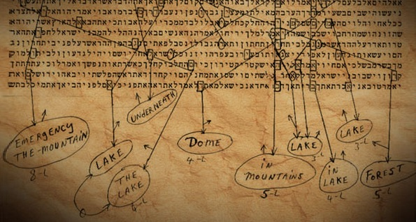
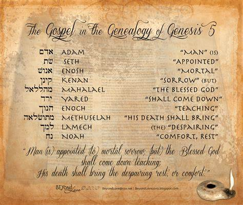
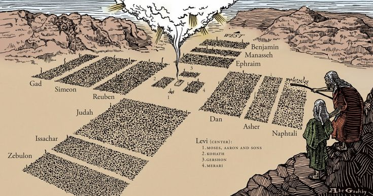
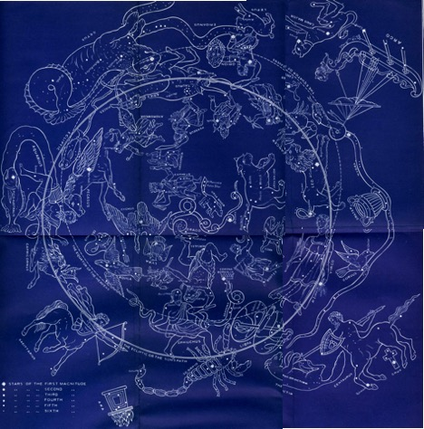
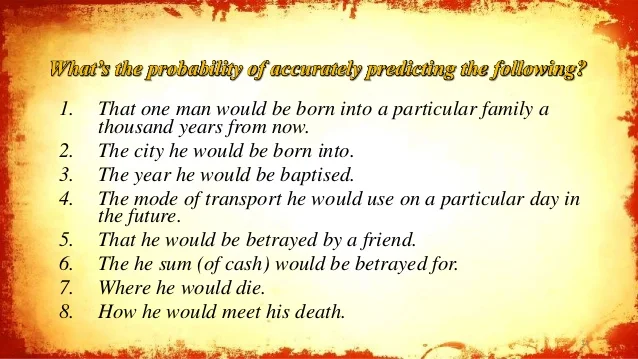

Equidistant lettering, or equidistant letter sequences (ELS), is a method of finding hidden words or phrases in a text by skipping a fixed number of letters between each letter of the word. For example, if we skip every 2 letters in the word “equidistant”, we get the word “eat”.Another example of an alleged ELS code using the name Yeshua is found in Genesis 1:1, the very first verse of the Bible. If we start from the first letter aleph in Elohim, and skip every 7 letters, we get the word Yeshua spelled out again. This pattern repeats itself 7 times in the first chapter of Genesis, forming a perfect heptagon around the word Elohim in the center. Some people see this as a sign of Jesus being the creator and the Lord, as well as a hint of the Trinity, since the word Elohim is plural but refers to one God.
Click here to learn more about Equidistant Lettering.
Here is another image of the Geneology in Gensis
When we take a Census of our nations population we think little of it. Sure it is great for analysis, but in the Bible it means so much more. In the Book of Numbers chapter 2, the people of Israel were wondering the desert for forty years (the number 40 is interesting, 40 days of flooding, 40 days Jesus wondered, etc.). God told Moses to take a census by tribe. This is how they were told to set their camps every night for 40 years. Again you have to ask yourself...Why would the Jews dare to desicrate this holy book with any reference to Jesus? More evidence of supernatural design
Click here to learn more about other fascinating facts about that census and yes there were others census in the Bible. While not in the Bible it is still very interesting. Before the flood Seth and Enoch were instructed by God to name the constellations in the heavens. This system was called The Mazzaroth. The stars even talk about God and His redemption plan with Jesus. Later King Nimrod of Babylon in his effort to usurp God had his sorcerers introduce a ME oriented system, which today is now called Astrology.
Statistics can be very boring, but not with the Bible. At the present Jesus fulfilled over 300 predictions. We cannot be more precise, because as demonstrated we are finding new evidence of God's divine hand hidden in the scripture waiting to be discovered. Still what are the odds that Jesus could fulfill only a handful of the 300 predictions? Short answer...Impossible.
Click here to check out the odds.
Psalm 22 is fascinating. This was written by King David 1,000 years ago and the crucification did not come into existence until 500 years before the birth of Jesus and yet everything in this Psalm parallels His Crucification